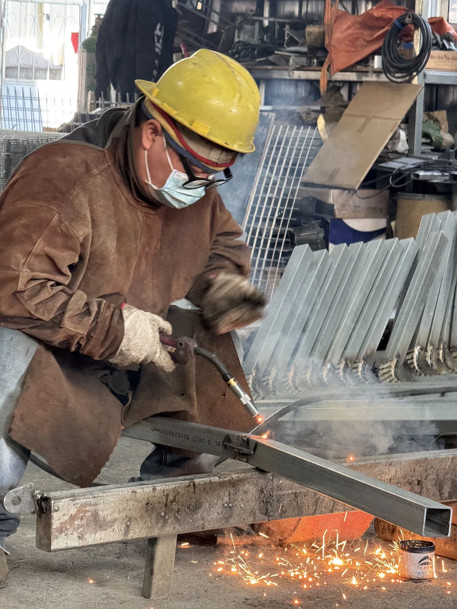
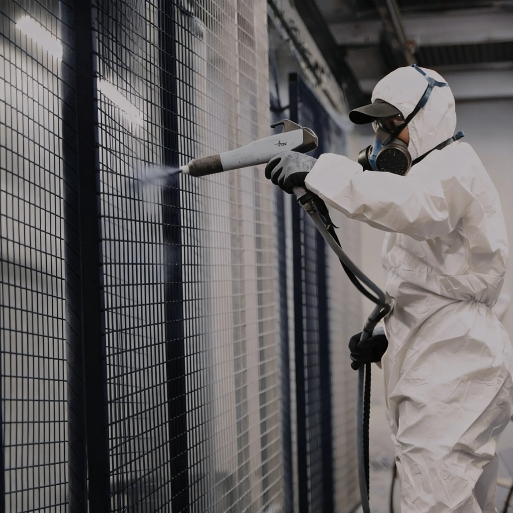
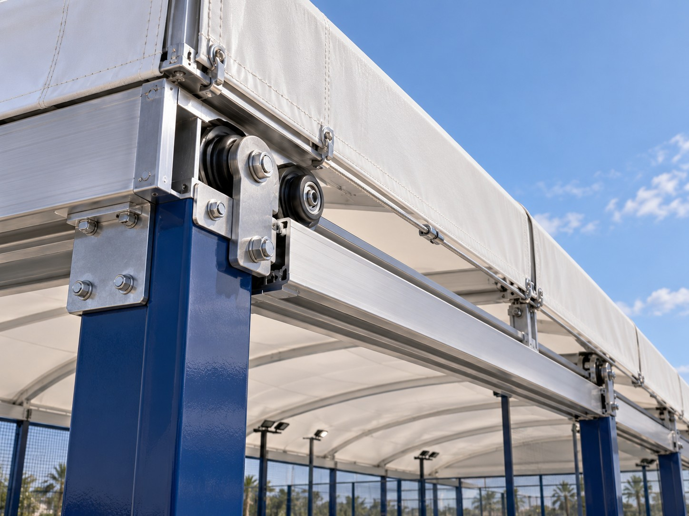
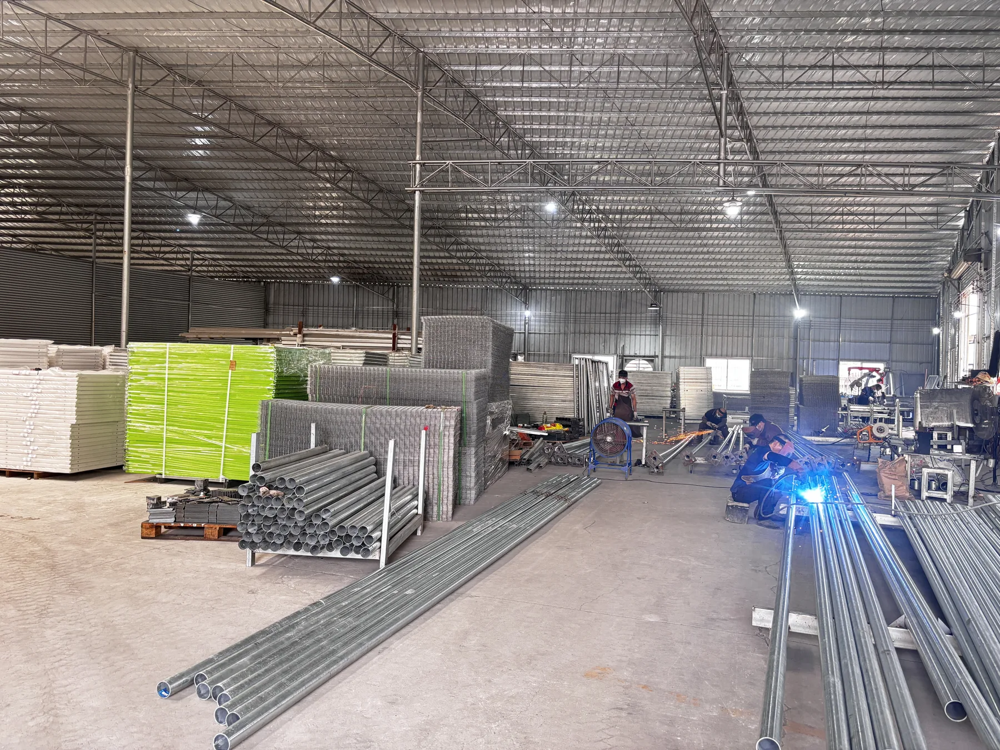
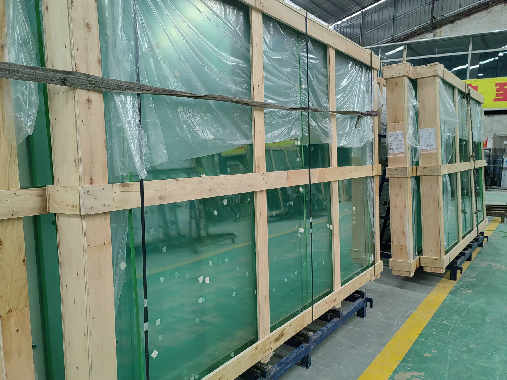
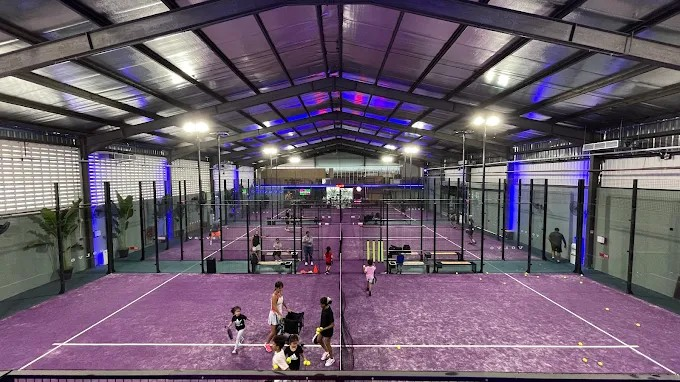

Supplier scope may include
- Anchor or base layout
- Available loading information
- Foundation interface drawings
- Modular foundation system where selected
Choosing a padel court supplier should involve more than comparing headline prices. Steel specification, corrosion protection, tempered glass, turf, lighting, engineering scope, packing, logistics and installation support can all change the real value and risk of a commercial project.

A commercial buyer should compare more than court appearance and unit price. Verify the steel specification, corrosion protection, 12 mm tempered glass, turf and lighting system, structural documentation, foundation responsibility, packing method, shipping scope, installation support, warranty and project references. The strongest comparison is made line by line using the same project specification, rather than by comparing headline quotations alone.

Start by matching the supplier’s system and support scope to the venue, climate and delivery model.
A commercial club, indoor hall, outdoor site, exposed coastal location, leased property, roofed venue and multi-court development do not create the same requirements. For a fixed commercial club or outdoor project, review the Panoramic Padel Court as one system reference; leased or relocatable sites may require a different foundation and delivery approach. A supplier offering one standard model may not suit every foundation, wind environment or operating plan.
Ask for the grade, section dimensions, wall thickness, mesh, connections, fasteners and drawings behind the quoted structure.
SPORTENVO publishes Q235B steel as a core specification. Its FORCE-HX configuration uses a 200 × 200 × 6 mm reinforced main structure, but that example is not a universal requirement. The appropriate sections depend on court type, local wind environment, foundation, roof interfaces and project engineering.

“Galvanized steel” alone does not describe the complete protection system.
Ask whether components are galvanized, whether hot-dip galvanizing applies to the quoted parts, how powder coating and surface preparation are handled, how cut edges or touch-up areas are treated, and what maintenance is expected. Coastal and exposed sites may need a different review from indoor venues. Request the actual process and specification for the supplied configuration rather than relying on one general material label.

Confirm the actual tempered safety glass supplied, not only a nominal thickness in a brochure.
Check thickness, safety treatment, compliance documents, edge finish, hole processing, quantities, packing and replacement planning. SPORTENVO publishes 12 mm tempered glass as a core court specification. That does not mean glass is unbreakable or that thickness alone defines compliance for every destination.
Compare turf by its complete intended use, construction and installation requirements.
Ask for pile height, fibre type, colour, backing, drainage characteristics, UV suitability and indoor or outdoor application. Confirm the sand requirement where applicable and how the turf is installed and maintained. There is no single “best” specification for every project; playing expectations, climate, drainage, usage and replacement planning all affect the choice.
Verify fixtures, mounting and responsibility for the complete lighting scope before comparing offers.
Record fixture specification, IP rating, mounting position, quantity, wiring scope, control requirements, lighting-design responsibility and replacement availability. SPORTENVO publishes IP65 LED lighting as a core specification. A universal lux level or wattage should not be assumed: the venue, fixture arrangement, competition or recreational use, mounting and local electrical requirements must be reviewed for the actual project.

A product catalogue is not the same as project engineering documentation.
Request court drawings, anchor or base layout, foundation interface information, assembly drawings, component identification, roof interfaces where applicable, installation instructions and project-specific confirmations. Determine which documents are issued before production and which accompany shipment.
Final structural approval may require a locally licensed engineer depending on the jurisdiction. The supplier’s technical scope and the local engineer’s code responsibility should be stated separately.
Review Engineering Scope →Clarify the supplier and local foundation scopes before the court is manufactured.
The court supplier may provide interface information; site investigation and locally approved civil design frequently remain local responsibilities. The final split must be written into the project scope.
Explore Modular Foundation → Review Site Planning Requirements →
Verify the approved specification through traceable production and pre-shipment evidence.
Practical checks can cover material confirmation, fabrication, welding, surface treatment, dimensions, component consistency, identification and packing inspection. Manufacturing quality should be verified with project-specific production evidence. Buyers can request material confirmation, production photos, dimensional checks, pre-shipment inspection records and packing evidence tied to the actual order.

A court combines glass, steel, turf, lighting, hardware and accessories that must arrive identifiable and ready for the agreed installation sequence.
Compare glass protection, separation of steel parts, component labels, container loading, unloading access and destination handling. Confirm whether the logistics quote includes the port, freight leg and destination costs you expect. The following terms are planning summaries only; use the contract and current Incoterms rules for the actual allocation.

Buyer takes responsibility from the named seller location under the agreed term.
Scope is organized to the named port of shipment under the agreed term.
Cost, insurance and freight are arranged to the named destination port under the agreed term.
Installation support should be agreed before the order, not after the container arrives.
Confirm drawings, manuals, assembly sequence, component labels, remote support, technician attendance if offered, local labor, tools, lifting equipment, site preparation and acceptance steps. Specify who manages missing or damaged items and how technical questions are handled during assembly. The quotation should describe the actual support level and any travel, labor or equipment excluded from supply.
Steel, coating, glass, turf, lighting and accessories may have different coverage and exclusions.
Ask for the written terms attached to the quoted configuration. Confirm what is covered, exclusions, the evidence required for a claim, who pays labor or freight, and the procedure for spare parts, replacement glass and lighting. This guide does not publish a universal SPORTENVO warranty period because verified component-level terms should come from the project quotation.
Compare every supplier against the same project brief. Leave assumptions out of the table and attach evidence to each completed field.
| Criteria | Supplier A | Supplier B | Supplier C |
|---|---|---|---|
| Court model | □ | □ | □ |
| Steel grade | □ | □ | □ |
| Main steel section | □ | □ | □ |
| Wall thickness | □ | □ | □ |
| Corrosion protection | □ | □ | □ |
| Glass specification | □ | □ | □ |
| Turf specification | □ | □ | □ |
| Lighting | □ | □ | □ |
| Foundation scope | □ | □ | □ |
| Technical drawings | □ | □ | □ |
| Local engineering responsibility | □ | □ | □ |
| Roof scope | □ | □ | □ |
| Packing | □ | □ | □ |
| Shipping Incoterm | □ | □ | □ |
| Installation support | □ | □ | □ |
| Warranty | □ | □ | □ |
| Spare parts | □ | □ | □ |
| Production inspection | □ | □ | □ |
| Project references | □ | □ | □ |
These are scope-control signals, not judgments about supplier location or price.
The proposal does not identify major components, services and exclusions.
Grade, sections or wall thickness cannot be compared.
The supplied safety-glass evidence remains unclear.
Court interfaces and local civil duties are not separated.
The delivery term, named place and destination costs are missing.
Documents, labor and support were not agreed before payment.
Coverage, exclusions and claim procedure are not stated by component.
Differences can come from steel specification, corrosion treatment, glass, turf, lighting, foundation, roof, engineering, packing, freight, installation and exclusions.
Two visually similar proposals may not include the same technical system or delivery boundary. Normalize the bill of scope and responsibilities before treating the prices as comparable. Do not compare headline price alone.
A reference is more useful when it resembles the proposed venue type, indoor or outdoor environment, climate, court system, foundation approach and installation complexity. Ask what scope the supplier actually delivered and which work remained local.

A real reference for court layout, venue integration and installation planning within actual site conditions.
View Project →
A real reference for multi-court layout, clear-height context, spectator circulation and social-area integration.
View Project →The published SPORTENVO process starts with the actual site and brief, then coordinates the court, foundation, roof, production and delivery support around the confirmed project scope.
Start with a written project brief, then compare the court model, steel grade and sections, corrosion protection, glass, turf, lighting, engineering documents, foundation interface, packing, shipping, installation support and component-level warranty. Ask every supplier to quote against the same scope. A complete comparison should also identify exclusions, local works and approvals so that a lower headline price is not mistaken for a complete project cost.
Compare manufacturers line by line against one technical and commercial schedule. Record the exact supplied specification, drawing package, foundation responsibility, logistics term, installation support, warranty coverage and project references. Request written evidence where appropriate and note every exclusion. This method shows whether differences reflect materials, service scope, logistics or risk, and prevents visually similar court quotations from being treated as technically identical.
Ask for the steel grade, section sizes, wall thicknesses, mesh specification, connection details, fasteners and structural drawings for the quoted court. There is no single steel section that suits every court or site. The correct selection depends on the court system, wind environment, roof interface, foundation and project engineering. Treat published product specifications as configuration information rather than automatic approval for your location.
SPORTENVO publishes 12 mm tempered glass as a core specification, but buyers should still verify the exact supplied glass, safety documentation, edge finish, hole processing, quantity, packaging and replacement plan. Thickness alone does not describe the complete glass scope. Ask whether the supplier can provide the actual compliance documentation for the supplied product and confirm any destination-specific requirements with the relevant local authority or project professional.
A suitable document package may include court drawings, anchor or base layout, foundation interface information, assembly drawings, component identification, installation instructions, packing list and project-specific technical confirmations. Roof projects may also need interface information. A catalogue is not the same as engineering documentation. Local structural approval may still require a licensed engineer in the project jurisdiction, so clarify both supplier and local responsibilities before ordering.
Foundation responsibility must be stated in writing. A supplier may provide an anchor layout, loading information, interface drawings or a modular foundation option. Local parties may remain responsible for soil investigation, drainage, civil works, site preparation and locally approved structural design. The split varies by project. Do not assume that buying court equipment automatically includes a foundation design suitable for the site or local code.
Inclusions vary, so there is no universal quotation scope. A proposal may cover the steel court, glass, turf, lighting, net, hardware, drawings, packing and selected support, while freight, import charges, unloading, foundations, drainage, electrical works, lifting equipment and local labor may be separate. Ask for a detailed bill of scope and exclusions, then compare all suppliers using the same delivery term and project boundary.
Compare warranty terms by component rather than relying on one headline number. Steel structure, coating, glass, turf, lighting and accessories may have different coverage, exclusions and claim procedures. Confirm who assesses a claim, what evidence is required, whether labor and freight are included, and how spare parts or replacement components are supplied. Use the written terms attached to the actual quotation, not general statements made before the final configuration is agreed.
Shipping can be included, excluded or quoted under a defined Incoterm. Confirm whether the proposal is EXW, FOB, CIF or another agreed term and identify the named place or port. Also clarify container loading, destination charges, customs, unloading and site handling. Incoterms allocate specific delivery responsibilities; they do not by themselves describe product quality, installation scope or every project cost. Obtain professional logistics advice when needed.
Confirm installation support before ordering. The agreed scope should state whether the supplier provides drawings, manuals, component labels, assembly sequence, remote support or technician attendance, and who supplies local labor, tools, lifting equipment and site preparation. Acceptance steps should also be clear. Support varies by supplier and project, so the final quotation and contract should describe the exact deliverables rather than relying on a general promise of installation guidance.
Request traceable information tied to your order: material confirmation, fabrication or production photos, component lists, dimensional checks, surface-treatment records where available, pre-shipment inspection evidence, packing photos, shipping marks and installation documents. Live or third-party inspection can also be considered when appropriate. Factory size and marketing images do not replace project-specific evidence. Verification should focus on whether the approved specification is consistently manufactured, identified and packed.
Not necessarily. Price differences can come from steel sections, corrosion treatment, glass, turf, lighting, drawings, foundation scope, roof interfaces, packing, freight, installation support, warranty and exclusions. A lower quotation may still be appropriate if the scope matches the project, but it cannot be evaluated fairly until each proposal is normalized. Compare the total project boundary, technical evidence and delivery responsibilities before deciding which offer provides suitable value.
Read the Complete Padel Club Planning Guide → Explore Roof Systems →
Share your country, venue type, number of courts, site dimensions and foundation or roof requirements. SPORTENVO can structure the first project scope around the actual site rather than a generic court quotation.